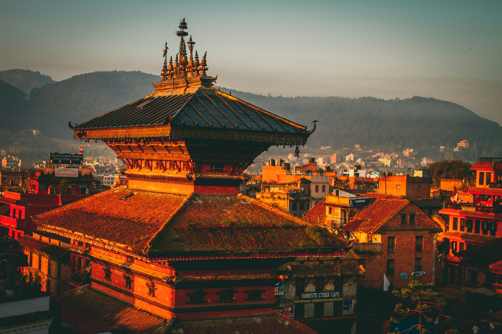

Blog
Aquí comparto pensamientos, aprendizajes y curiosidades sobre el arte de viajar. Desde consejos prácticos hasta reflexiones personales, este blog es mi bitácora emocional
Últimas Publicaciones
Preparándome para la Aventura en Mongolia
Exploro los preparativos esenciales para mi próximo viaje a Mongolia, desde la elección del equipo adecuado hasta la planificación de la ruta.
Top 5 Experiencias Imperdibles en Nepal
Descubro las experiencias más emocionantes que Nepal tiene para ofrecer, desde el trekking en el Himalaya hasta la inmersión en la cultura local.
Consejos para Viajar Sosteniblemente
Comparto estrategias para minimizar el impacto ambiental mientras exploro nuevos destinos, promoviendo un turismo responsable.

